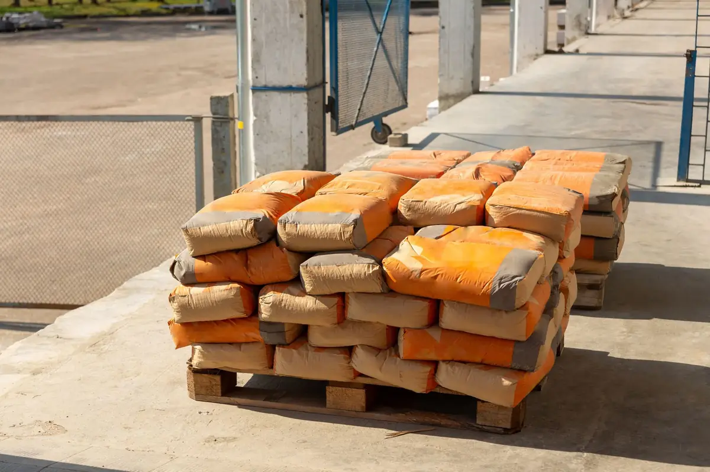
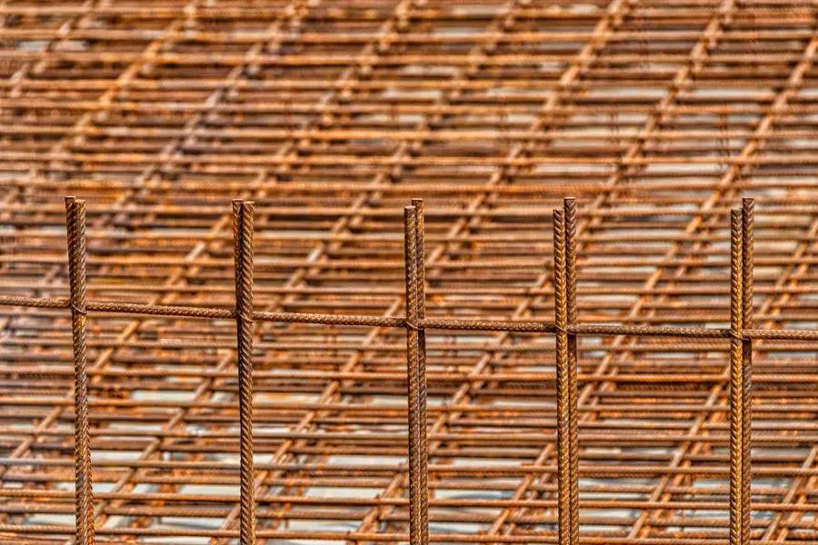
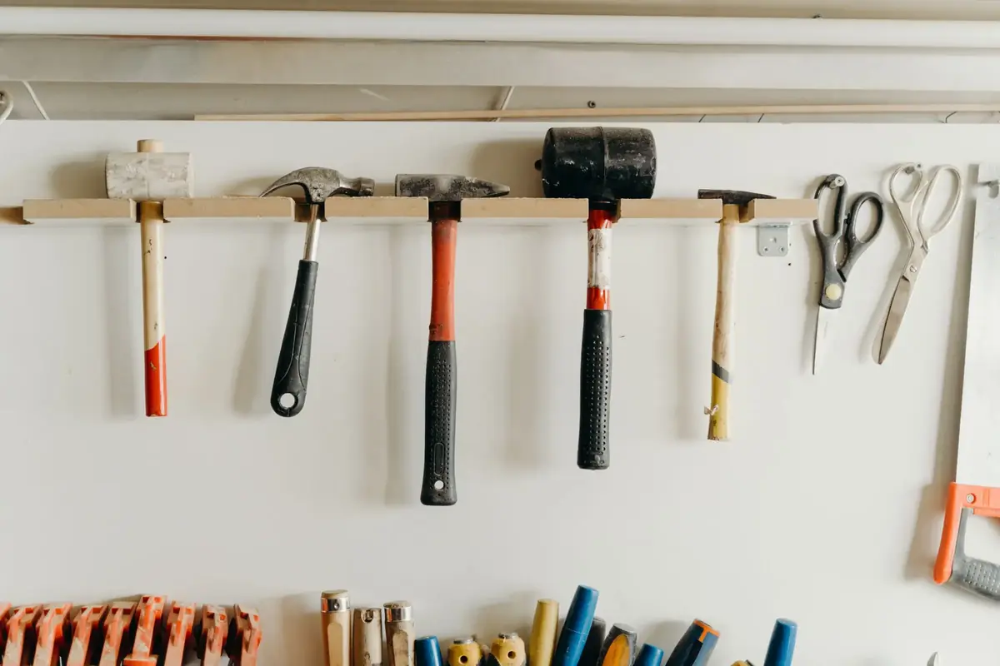
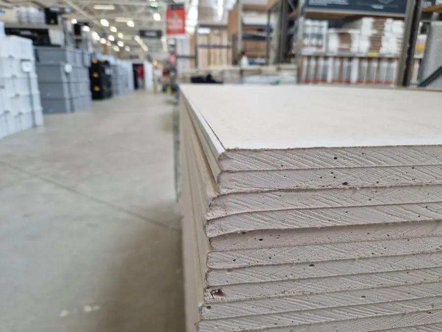

Sypké zmesi
Cement, vápno, malty, omietky, lepidlá, stierky a samonivelačné hmoty.
Baumit, Cemmac, Calmit, Holcim, Murexin, Univerbau
Murovací materiál
Tehly, pórobetónové a betónové tvárnice, preklady a stropné systémy.
Pezinské tehelne, Ytong, Porfix, Betonárka Nadlice
Strešné krytiny
Pálené a betónové škridly, plechové krytiny, asfaltové pásy a príslušenstvo.
Tondach, Bramac, Mediterran, Onduline, Icopal, Blachotrapez
Dlažby a ploty
Zámkové dlažby, terasové platne, obrubníky, palisády a plotové systémy.
City Stone Design, Premac, Stadreko
Izolačný materiál
Minerálna vlna, polystyrén, asfaltové pásy, izolácie proti vode a radónu.
Knauf Insulation, Isover, Nobasil, Icopal, Den Braven, Climowool
Komínové systémy
Certifikované komíny so šamotovou alebo nerezovou vložkou.
Stadreko, Schiedel
Strešné okná
Kyvné a výklopné strešné okná, výlezy, svetlíky, schody a doplnky.
Velux, Fakro, Rooflite
Hutný materiál
Betonárska oceľ, siete, plechy, profily, rúry, zárubne a garážové brány.
Yssel Steel
Dvere a okná
Interiérové, vchodové, bezpečnostné a posuvné dvere. Okná drevené, dvojsklo.
Masonite
Stavebné rezivo
Dosky, hranoly, foršne, strešné laty, tatranský profil, krovy na mieru.
Drepex
Náradie a doplnky
Stavebné, elektrické a záhradné náradie, spojovací materiál, mriežky a poklopy.
Slovakia Trend, DS Haco
Podhľady a PVC
Plastové zatrávňovacie dlažby, plotovky, profily, platne a káblové žľaby.
Transform Recykling
Sadrokartón a zateplenie
Suchá výstavba, profily, polystyrén, sklotex, fólie a strešné doplnky.
Stavebné profily, Masterplast
Fasádny systém
Silikónové, silikátové a mozaikové omietky, fasádne farby, zatepľovacie systémy.
Baumit, Univerbau
Farby a laky
Interiérové a fasádne farby, laky, lepidlá, riedidlá, tónovacie systémy.
Het, Chemolak, Chemos, ElastikV sortimente tovarov v našich stavebninách nájdete produkty popredných slovenských, ale i svetových výrobcov. Systém zliav dohodnutý s výrobcami materiálu nám dovoľuje predávať vo výhodných cenách stavebným firmám, individuálnym stavebníkom, ako aj spolupracujúcim stavebninám. Materiál dopravíme vlastnou nákladnou dopravou na miesto stavby, ktoré určíte, a to v rámci celého Slovenska. V našich stavebninách máte možnosť kúpiť stavebný materiál na splátky cez Quatro a úplnou samozrejmosťou je aj platba (cez terminál) platobnými kartami. Tiež vám zdarma vypracujeme cenové ponuky a samozrejme aj poradíme.
Nenašiel si, čo hľadáš? Zavolaj, poradíme.
Zavolať 0905 622 223